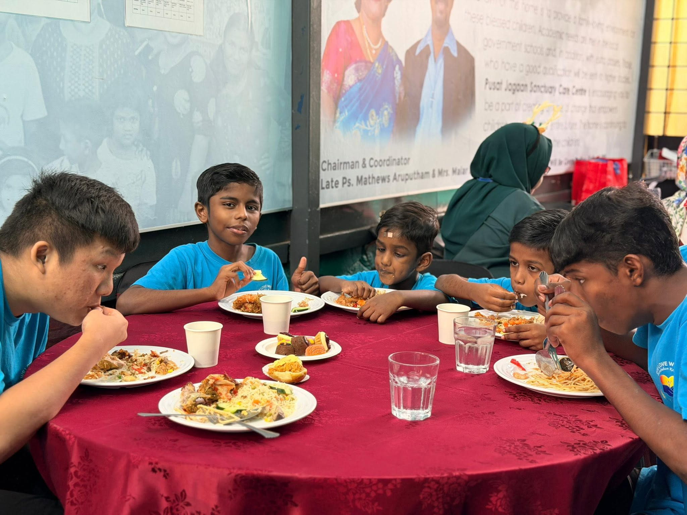
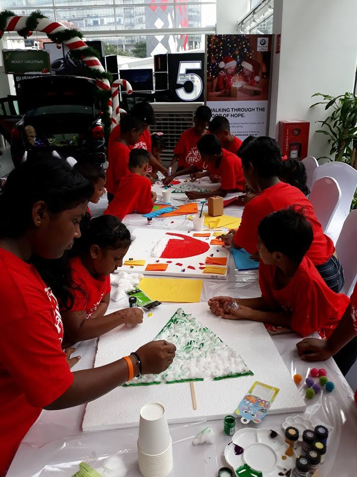
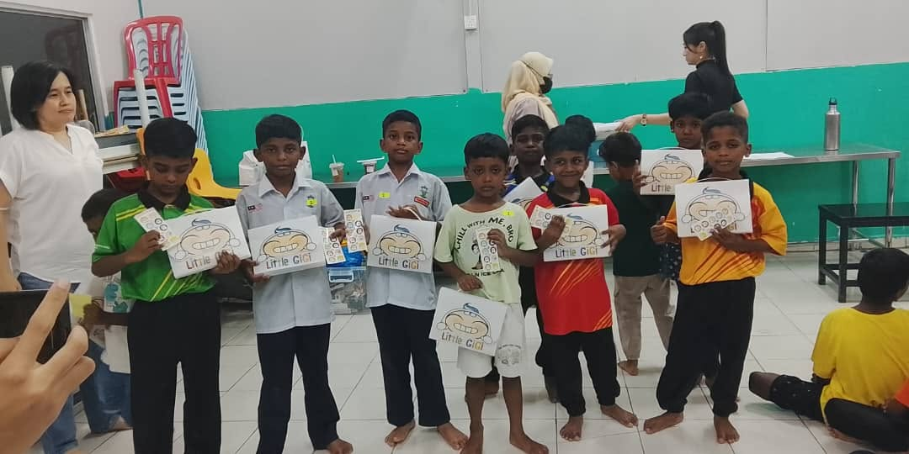
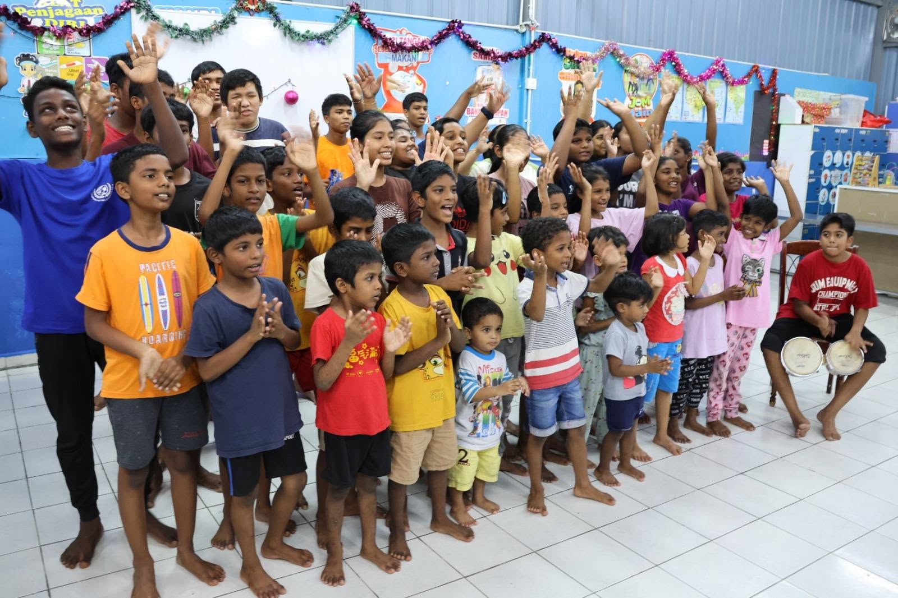
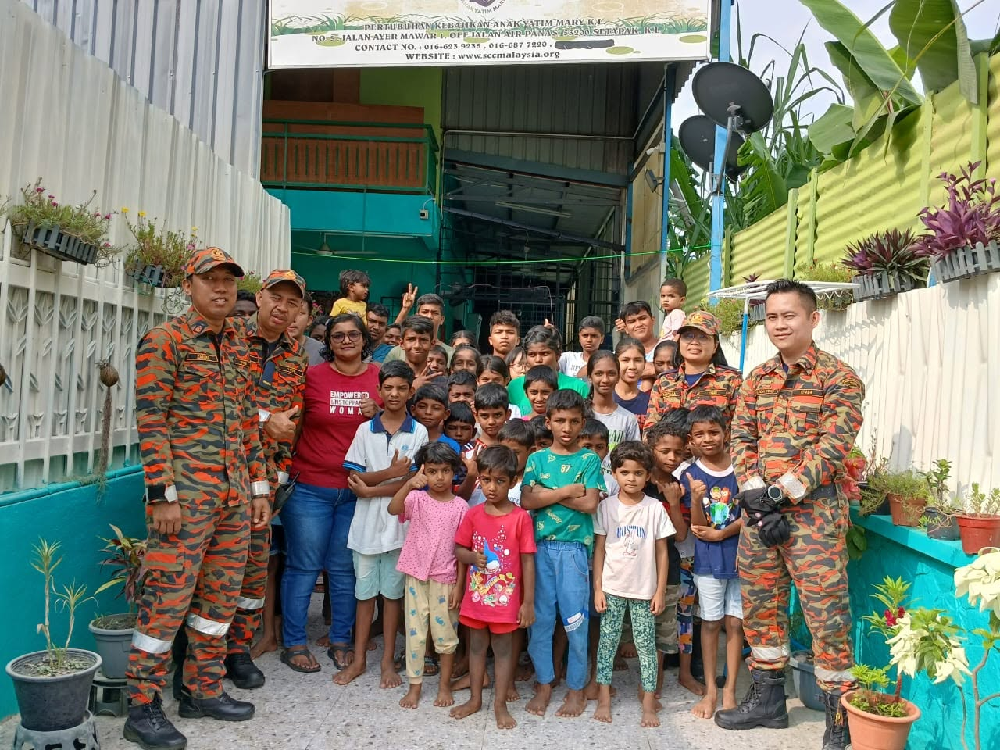
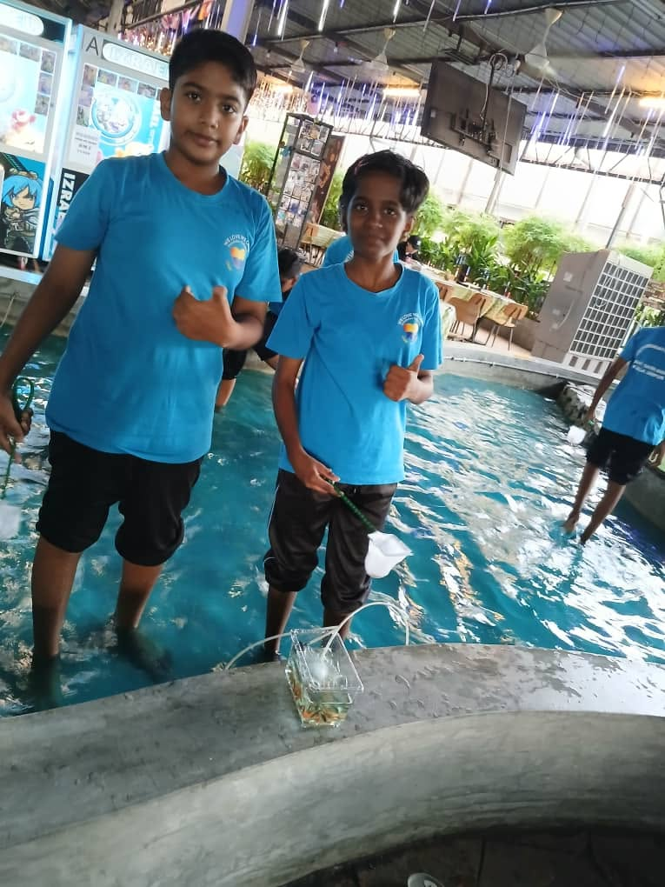

Healthy Food
Balanced, nutritious daily meals to support the healthy growth of every child in our care.

A loving home for every child, a family for life.
Rumah Kasih Mary is a children's home in Setapak, Kuala Lumpur, giving abandoned and at-risk children a safe home, education and loving care since 2003.
Support a Child Today Learn More ↓Rumah Kasih Mary began in April 2003 as a small wooden house in Setapak, started by Pastor Dr. Mary Rayappan to shelter four children born into desperate circumstances. More than two decades later, the home continues to grow, now cared for by the founder's daughter-in-law, and today looks after 48 children of various ages.
The children who come to us have often been abandoned, or their parents are unable to care for them due to addiction, illness, financial hardship or imprisonment. Here, they are given a stable, structured environment filled with food, shelter, healthcare, education and above all, love.
Read our full story →Six pillars of care for every child in our home

Balanced, nutritious daily meals to support the healthy growth of every child in our care.

School resources, tuition support and guidance so every child has a path to a brighter future.

Regular check-ups, vaccinations and health education to keep our children safe and thriving.

A safe, nurturing double-storey home in Setapak where every child feels secure and loved.

Counselling and social support that help children build confidence and resilience.

Access to safe, clean drinking water for every child living in the home, every single day.
Home Location
Caretakers
Children Cared For
Raised for Current Causes
Real stories from children who grew up at Rumah Kasih Mary
"Home is where a child feels they belong. I spent nine years here, and the caregivers and children became my family. I found a true sense of belonging."
"I was brought to this home at eight years old. For the first time, I stepped into a classroom and felt hope. I later earned a Diploma in Early Childhood Education."
"This home didn't just give me shelter, it gave me a second chance and a family. I am now completing my Diploma in Computer System Administration."
"For over 20 years we have watched this home grow alongside the number of children in its care. Malar and her team have truly built a home away from home for these kids."
"I moved back to Malaysia and wanted my life to mean more than just work. A random search for a nearby orphanage led me here, and my family and I have kept coming back ever since."
"One visit was all it took. Seeing the home and the children in person made me want to keep supporting them however I can."
Every contribution, big or small, changes a child's life
Want to make an impact in someone's life? Join us by giving your time and skills to those who need it most. Whether it is teaching, mentoring, organising events, or simply lending a hand, your effort can bring hope and joy into a child's world - and help build a brighter future for everyone involved.
Donate Now Become a Volunteer